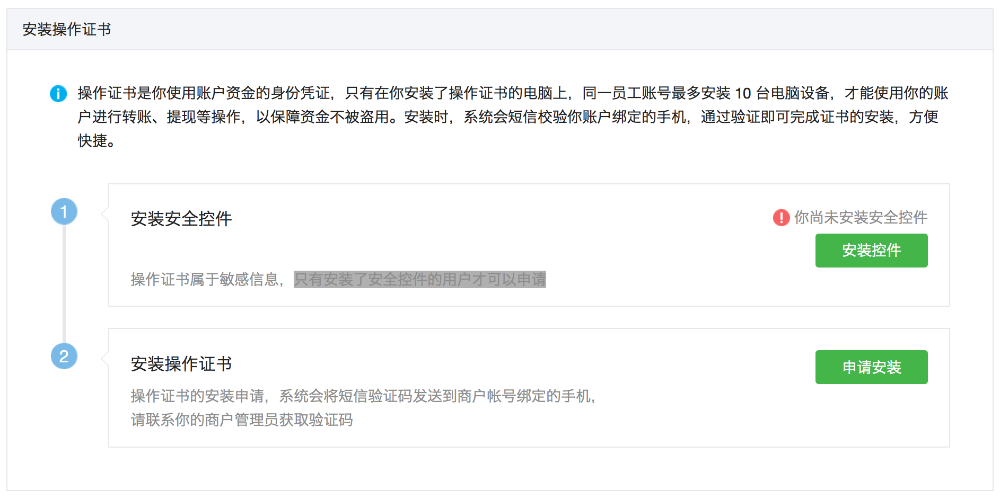
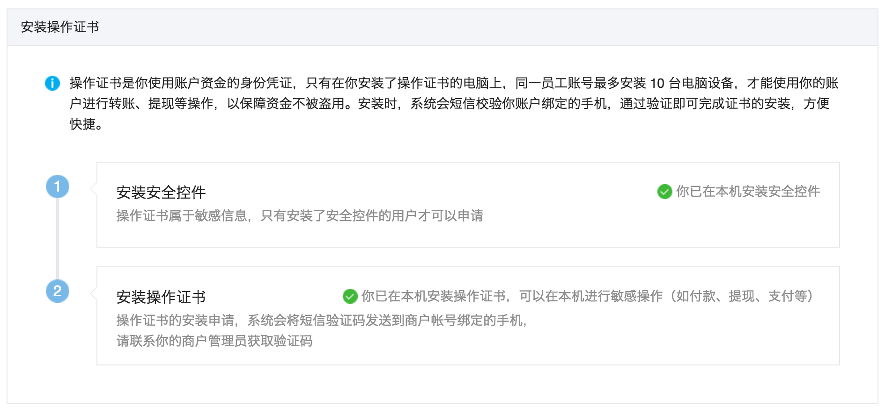
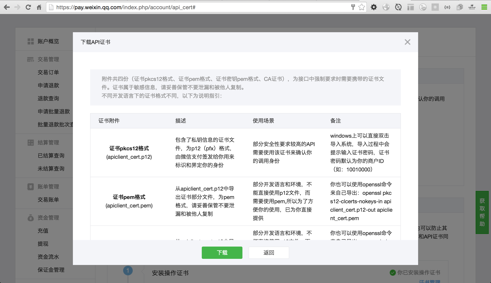

https://pay.weixin.qq.com/index.php/account/api_cert

附件共四份（证书pkcs12格式、证书pem格式、证书密钥pem格式、CA证书），为接口中强制要求时需要携带的证书文件。证书属于敏感信息，请妥善保管不要泄漏和被他人复制。
不同开发语言下的证书格式不同，以下为说明指引：
欢迎使用微信支付！
微信支付API共四份（证书pkcs12格式、证书pem格式、证书密钥pem格式、CA证书）,为接口中强制要求时需携带的证书文件。
证书属于敏感信息，请妥善保管不要泄露和被他人复制。
不同开发语言下的证书格式不同，以下为说明指引：
证书pkcs12格式（apiclient_cert.p12）
包含了私钥信息的证书文件，为p12(pfx)格式，由微信支付签发给您用来标识和界定您的身份
部分安全性要求较高的API需要使用该证书来确认您的调用身份
windows上可以直接双击导入系统，导入过程中会提示输入证书密码，证书密码默认为您的商户ID（如：10010000）
证书pem格式（apiclient_cert.pem）
从apiclient_cert.p12中导出证书部分的文件，为pem格式，请妥善保管不要泄漏和被他人复制
部分开发语言和环境，不能直接使用p12文件，而需要使用pem，所以为了方便您使用，已为您直接提供
您也可以使用openssl命令来自己导出：openssl pkcs12 -clcerts -nokeys -in apiclient_cert.p12 -out apiclient_cert.pem
证书密钥pem格式（apiclient_key.pem）
从apiclient_cert.p12中导出密钥部分的文件，为pem格式
部分开发语言和环境，不能直接使用p12文件，而需要使用pem，所以为了方便您使用，已为您直接提供
您也可以使用openssl命令来自己导出：openssl pkcs12 -nocerts -in apiclient_cert.p12 -out apiclient_key.pem
CA证书（rootca.pem）
微信支付api服务器上也部署了证明微信支付身份的服务器证书，您在使用api进行调用时也需要验证所调用服务器及域名的真实性
该文件为签署微信支付证书的权威机构的根证书，可以用来验证微信支付服务器证书的真实性
某些环境和工具已经内置了若干权威机构的根证书，无需引用该证书也可以正常进行验证，这里提供给您在未内置所必须根证书的环境中载入使用
https://github.com/tvrcgo/weixin-pay
npm i -S weixin-pay
var WXPay = require('weixin-pay');
var wxpay = WXPay({
appid: 'xxxxxxxx',
mch_id: '1234567890',
partner_key: 'xxxxxxxxxxxxxxxxx', //微信商户平台API密钥
pfx: fs.readFileSync('./wxpay_cert.p12'), //微信商户平台证书
});
wxpay.createUnifiedOrder({
body: '扫码支付测试',
out_trade_no: '20140703'+Math.random().toString().substr(2, 10),
total_fee: 1,
spbill_create_ip: '192.168.2.210',
notify_url: 'http://wxpay_notify_url',
trade_type: 'NATIVE',
product_id: '1234567890'
}, function(err, result){
console.log(result);
});